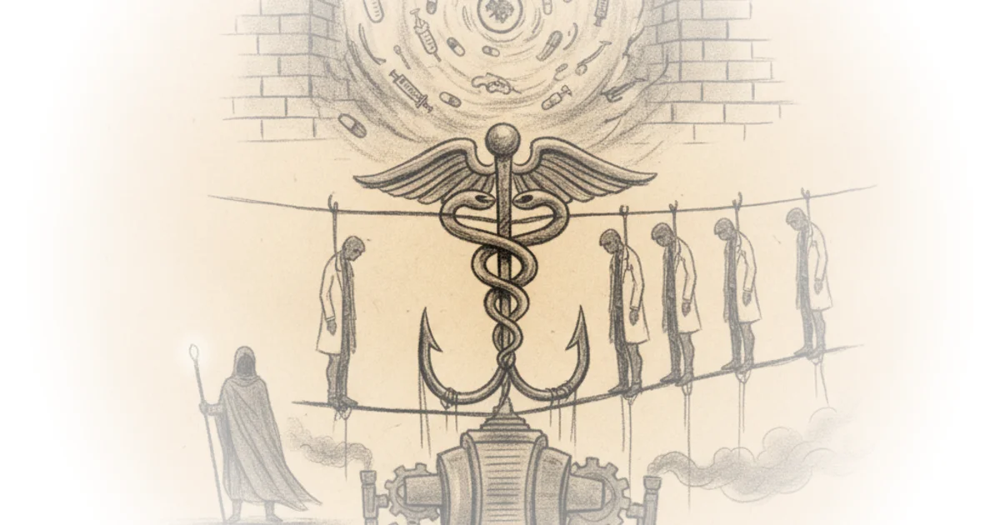

150: ‘We cannot wait for very sick women to tell US how much they are suffering’ Various · Two Truths ·Aug 20, 2026 · 13 min read · Public Health
Suit alleging medical establishment's desire to compel doctors "to toe the line in all matters… Various · Reason ·Aug 20, 2026 · 11 min read · Public Health 
Chartbook 467 "mad dogs and ...": heatwave economics - summer 2026 Adam Tooze · Chartbook ·Aug 16, 2026 · 12 min read · Public Health
How vivek ramaswamy’s mom manipulated alzheimer’s data and made her son rich Judd Legum · Popular Information ·Aug 14, 2026 · 11 min read · Public Health
The secret society of nerds who control Congress and ruin our health care Matt Stoller · BIG by Matt Stoller ·Aug 12, 2026 · 14 min read · Public Health
Should we "pace" AI self-improvement? Noah Smith · Noahpinion ·Aug 9, 2026 · 14 min read · Public Health
Abdul El-Sayed's historic victory and the American tradition of buying primaries Kahlil Greene · History Can't Hide ·Aug 5, 2026 · 10 min read · Public Health
"If you're poor, you can sweat": One building's air conditioning divide Michael Macleod · London Centric ·Jul 29, 2026 · 10 min read · Public Health
I didn’t love craig spencer’s ‘embrace maha’ column in the Atlantic. Instead of canceling my… Jeremy Faust · Inside Medicine ·Jul 27, 2026 · 26 min read · Public Health
143: Why 4 in 10 new moms end up in the er with issues that could have been treated in primary care Various · Two Truths ·Jul 26, 2026 · 10 min read · Public Health
U.S. Poop parasite is familiar Ukraine nightmare Tim Mak · The Counteroffensive ·Jul 25, 2026 · 10 min read · Public Health
The administration wants your medical data for his drug war Mehdi Hasan · Zeteo ·Jun 30, 2026 · 13 min read · Public Health
A fictional scenario based on two very real dissidents Various · Natural Selections ·Jun 30, 2026 · 12 min read · Public Health
Europe's resistance to ac is driving it insane Noah Smith · Noahpinion ·Jun 28, 2026 · 16 min read · Public Health
The casual destruction of usaid is, so far, the the administration administration action that has… Brad DeLong · DeLong's Grasping Reality ·Jun 27, 2026 · 13 min read · Public Health
London's schools can't cope with the heat Michael Macleod · London Centric ·Jun 23, 2026 · 12 min read · Public Health
Should people avoid Whole-Body screening info? Scott Alexander · Astral Codex Ten ·Jun 22, 2026 · 19 min read · Public Health
Secret emails reveal sketchy tactics in California public health's tobacco ban 'endgame' Various · Reason ·Jun 22, 2026 · 11 min read · Public Health
139: How fatherhood changes dads’ brains Various · Two Truths ·Jun 21, 2026 · 15 min read · Public Health
Why we should vaccinate wild animals Various · Works in Progress ·Jun 18, 2026 · 13 min read · Public Health
Unlocked repost: Curing US healthcare, part III: The future Paul Krugman · Paul Krugman ·Jun 17, 2026 · 15 min read · Public Health
Americans should celebrate China's biotech revolution Richard Hanania · ·Jun 15, 2026 · 13 min read · Public Health
'Find some kids': How health officials drummed up fake support for tobacco bans in Massachusetts… Various · Reason ·Jun 11, 2026 · 10 min read · Public Health
Insurers aren't the main villain of the U.S. Health care system Noah Smith · Noahpinion ·Jun 10, 2026 · 15 min read · Public Health
136: Why telling women to 'talk to their doctor' or 'advocate for themselves' is not that simple Various · Two Truths ·Jun 7, 2026 · 11 min read · Public Health
Covid from inside the heart of the European union Various · Natural Selections ·Jun 2, 2026 · 10 min read · Public Health
Unlocked repost: Curing U.S. Health care, part II Paul Krugman · Paul Krugman ·May 28, 2026 · 14 min read · Public Health
Ideas are still big but books got small Matt Yglesias · Slow Boring ·May 22, 2026 · 20 min read · Public Health